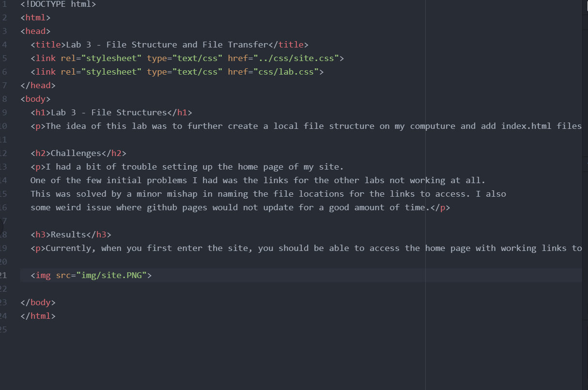
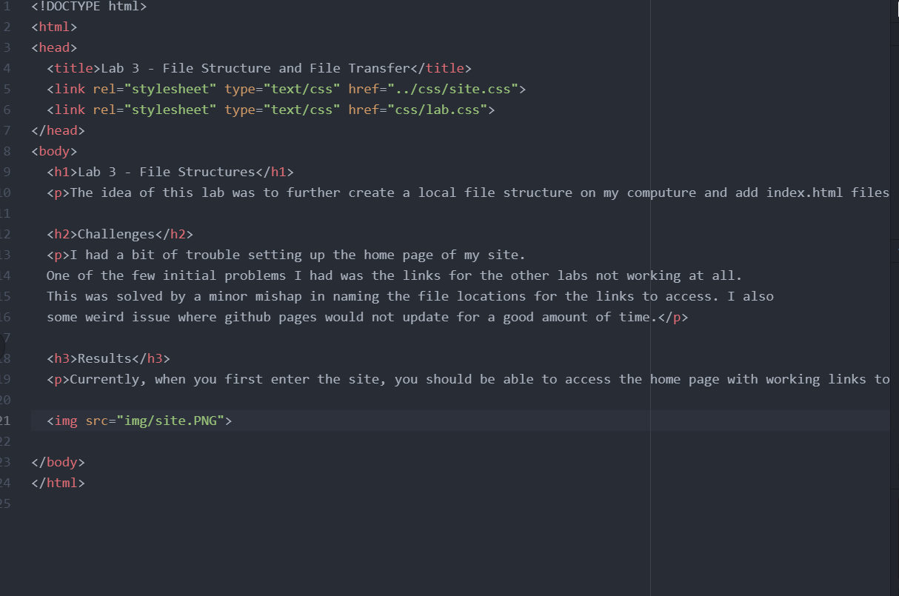

The idea of this lab was to further create a local file structure on my computure and add index.html files.
I had a bit of trouble setting up the home page of my site. One of the few initial problems I had was the links for the other labs not working at all. This was solved by a minor mishap in naming the file locations for the links to access. I also some weird issue where github pages would not update for a good amount of time.
Currently, when you first enter the site, you should be able to access the home page with working links to all labs.
 
